Completed Projects
Every completed project story currently published from SaniCrete field posts and project spotlights.
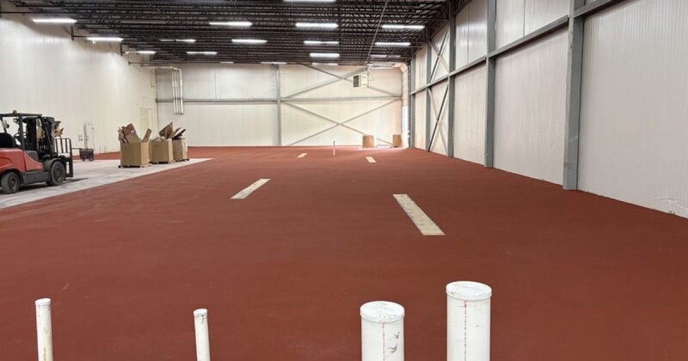
Project Spotlight20,000 SF of STX Before the Lines Move In
Phase 1 of a food processing expansion: SaniCrete STX installed on open concrete before production equipment moved in.
View Project →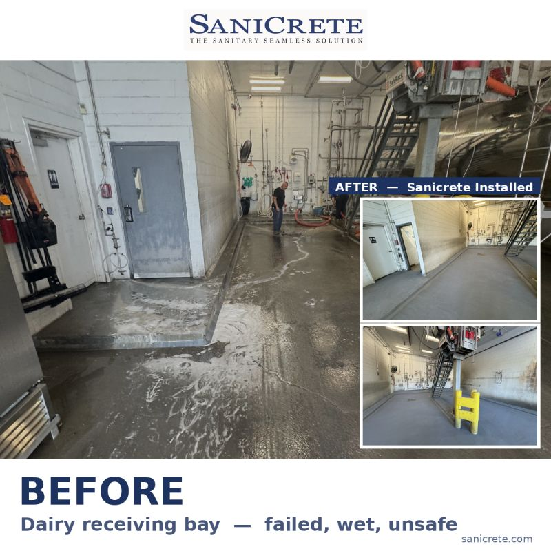
From the FieldOne Night to Rebuild a Dairy Receiving Bay
A dairy receiving bay needed new flooring without missed deliveries. The crew worked the one-night window and had it back by morning.
View Project → From the Field
From the Field
Too Small to Bother With? There's No Such Thing
A patch in a single cooler gets the same dedication we bring to a 100,000 SF install. Small food plant floor repairs still matter.
View Project → From the Field
From the Field
Hidden Delamination in Food Plant Floors
A floor can look fine on top while hollow voids and failed bond hide underneath. We removed the failed system and rebuilt it with STX.
View Project → From the Field
From the Field
From Worn Out to Washdown Ready
A patched production corridor was delaminating in a daily washdown environment. We rebuilt it with SaniCrete STX.
View Project → From the Field
From the Field
The Best Floors Are the Boring Ones
A SaniCrete floor installed in 2014 at a cheese processor is still performing through lactic acid, caustic washdowns, and thermal shock.
View Project → Project Spotlight
Project Spotlight
Durable Does Not Have to Mean Ugly
About 4,000 SF of SaniCrete STX installed over the Memorial Day shutdown in a food processing space.
View Project → Project Spotlight
Project Spotlight
Failed Dairy Brick Under Conveyors: Weekend SaniCrete STX Repair
Failed brick, low clearance conveyors, and one weekend shutdown. We removed the root problem, rebuilt slope with SaniBulk, and capped it with STX.
View Project → From the Field
From the Field
Food Plant Floor Audit Problems: What Should Be There Instead
Failed patches and exposed aggregate near drains can become audit problems. SaniCrete STX with VR cant cove is built for washdown environments.
View Project → From the Field
From the Field
Elevated Floor, No Easy Access: SaniCrete STX and VR Cove Install
Every bag and piece of equipment hoisted up by chain fall. Slow start, clean finish. STX 3/8 inch gray with S-40 quartz and VR cove around the perimeter.
View Project → Project Spotlight
Project Spotlight
SaniCrete Partners with Ross Industries on Demo Room Flooring in Midland, VA
World-class meat and poultry processing equipment deserves a floor built to match. SaniCrete delivers for Ross Industries.
View Project → Project Spotlight
Project Spotlight
Cooler to Processing Area: Poultry Client Expands with SaniCrete
Old cooler, new processing area. When our poultry client needed to expand, they called SaniCrete for the flooring.
View Project → From the Field
From the Field
How SaniCrete STX Is Installed: Hand Troweled Cementitious Urethane Flooring for Food Processing
A closer look at why hand troweling cementitious urethane out of buckets is still the best method for installing high-performance food plant floors.
View Project →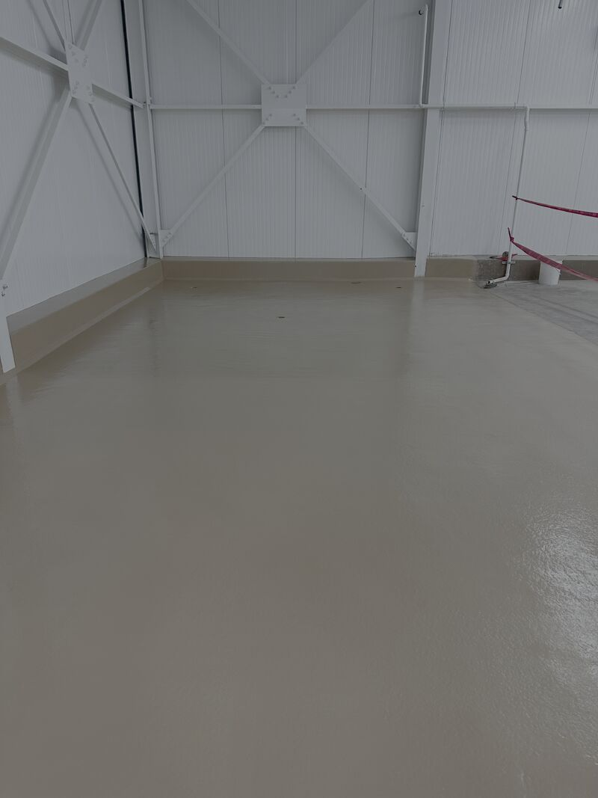
Project SpotlightBefore and After: Chemical Room Flooring at an Ohio Cheese Processing Facility
SaniCrete STX with a chemical resistant top coat delivers lasting protection where harsh chemicals hit the floor daily at this Ohio cheese facility.
View Project → Project Spotlight
Project Spotlight
20-Year Client, Brand New Oven Room
7,000 SF of SaniCrete STX for a longtime client who brought us with him to a new plant. Phase 2 adds VR curbing with cant cove.
View Project → Project Spotlight
Project Spotlight
Why "Just Coat Over It" Fails: 3,400 SF Meat Processing Floor Restoration
Years of coating over failing floors created layers of bacteria-harboring buildup. See how we restored this Idaho facility with SaniCrete STX in one weekend.
View Project →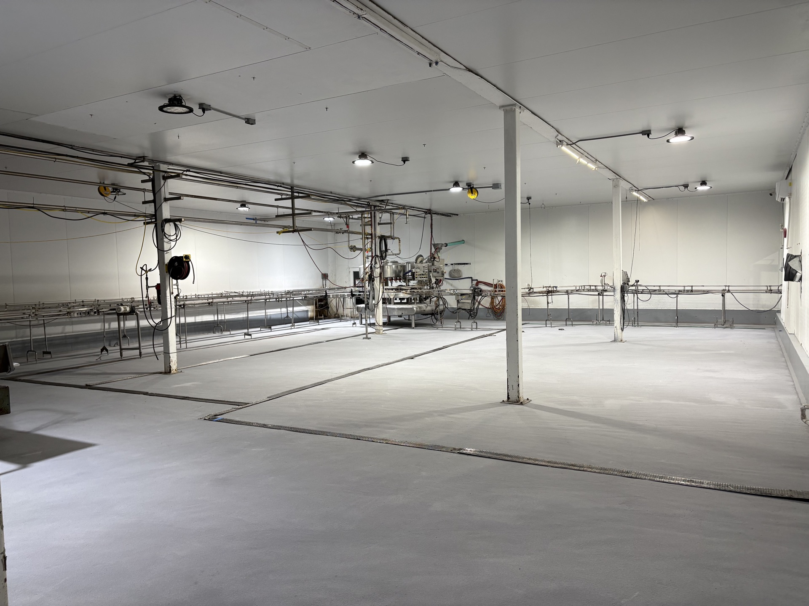
Project SpotlightWeekend Shutdown: 4,800 SF Juice Facility Floor in 50 Hours
How our crew installed two flooring systems across a Florida juice processing facility in a single weekend — zero production downtime.
View Project → Project Spotlight
Project Spotlight
Shutdown Season: 4,200 SF Floor Replacement Over Christmas
Our crew replaced a delaminated production floor with SaniCrete STX stainless steel reinforced cementitious urethane during the Christmas shutdown — on time, no delays.
View Project →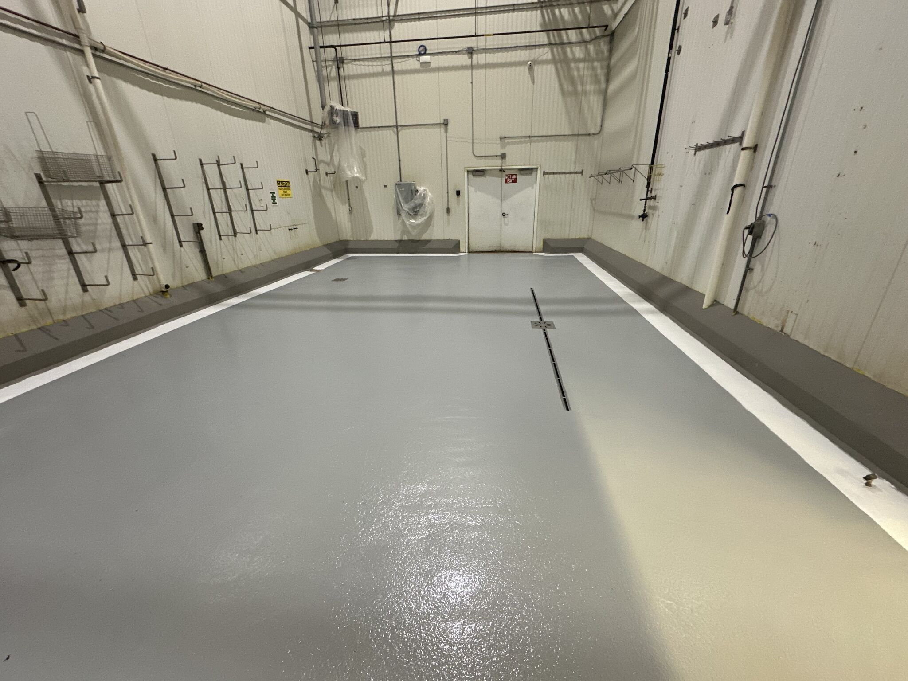
Project SpotlightThanksgiving Shutdown: Spice Room & Chemical Room Renovation
Our crew transformed a food processing facility's Spice Room and Chemical Room with SaniCrete STX, VR curbing, and SaniCoat topcoats during Thanksgiving shutdown.
View Project → Project Spotlight
Project Spotlight
Weekend Blitz: 3,000 SF Poultry Facility Floor in 48 Hours
Demo Saturday, SaniCrete STX installed Sunday, plant back in production Monday. 3,000 square feet of poultry processing floor replaced in a single weekend.
View Project →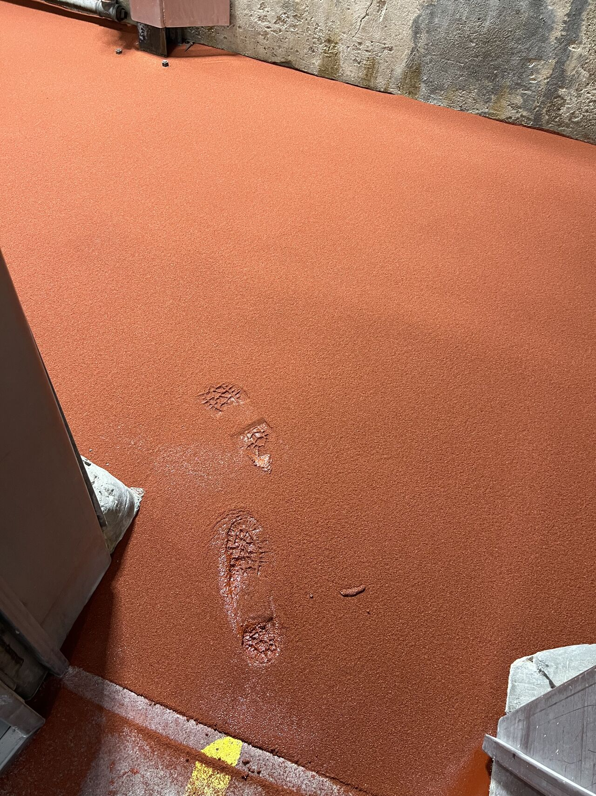
From the FieldYou Can Never Have Too Much Caution Tape
Caution tape, warning signs, DO NOT ENTER — and someone still walks across the wet floor. A lighthearted look at jobsite realities in food processing.
View Project → Project Spotlight
Project Spotlight
Coffee Processing Facility — SaniCrete SL Installation
3/8" SaniCrete SL cementitious urethane with broadcast to rejection finish for a coffee processing facility. Clean, seamless, USDA-compliant.
View Project →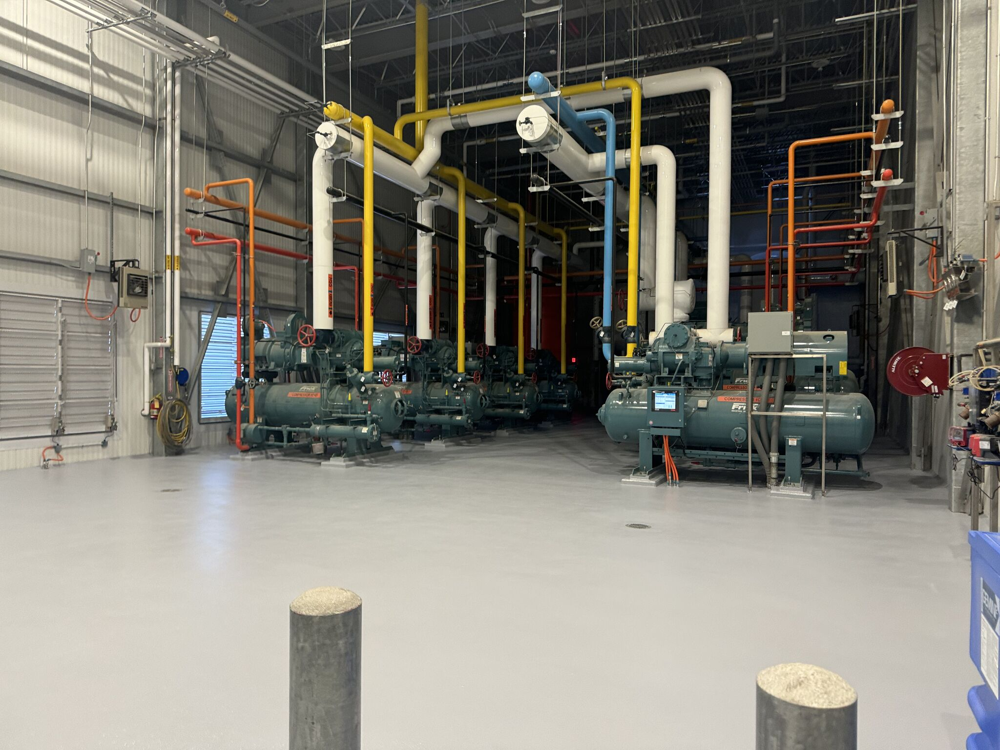
Case StudyOne Year Later: Poultry Facility Engine Room Floor
Zero standing water. Zero floor failures. Over a year in, and the SaniCrete STX floor still looks nearly identical to day one.
View Project →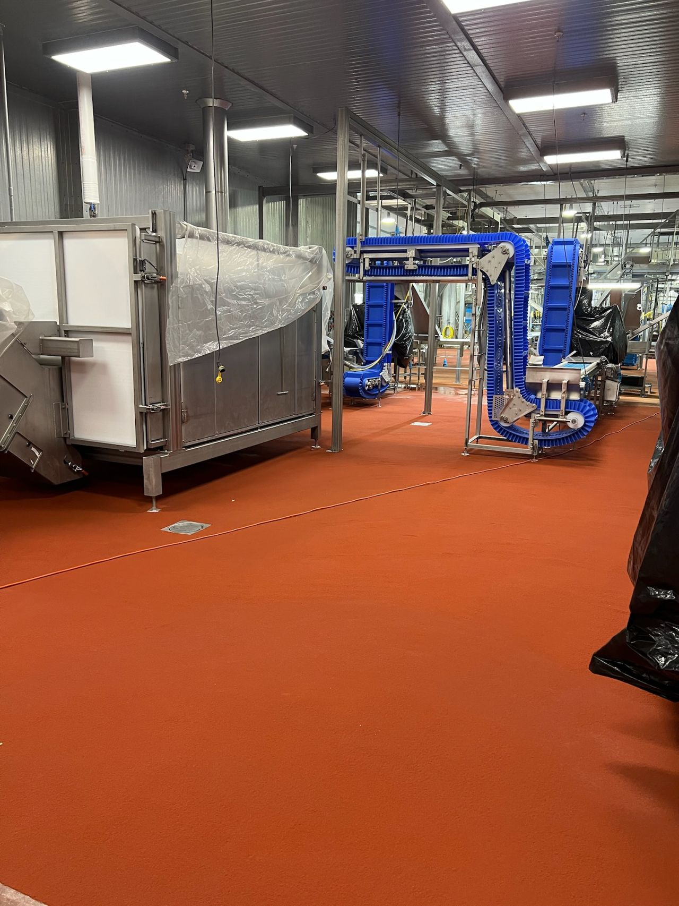
Project SpotlightSaniCrete STX Installation at Food Processing Facility
From surface prep to finished floor — the attention to detail shows in the result. 3/8" SaniCrete STX cementitious urethane for a longtime client.
View Project →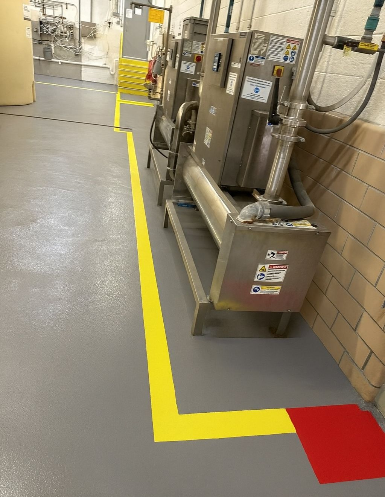
Project SpotlightBulletproof Chemical Storage Flooring — 1,200 SF
Chemical-resistant flooring built to handle harsh acids and aggressive cleaning compounds. SaniCrete SL with SaniCoat 250CR topcoat.
View Project →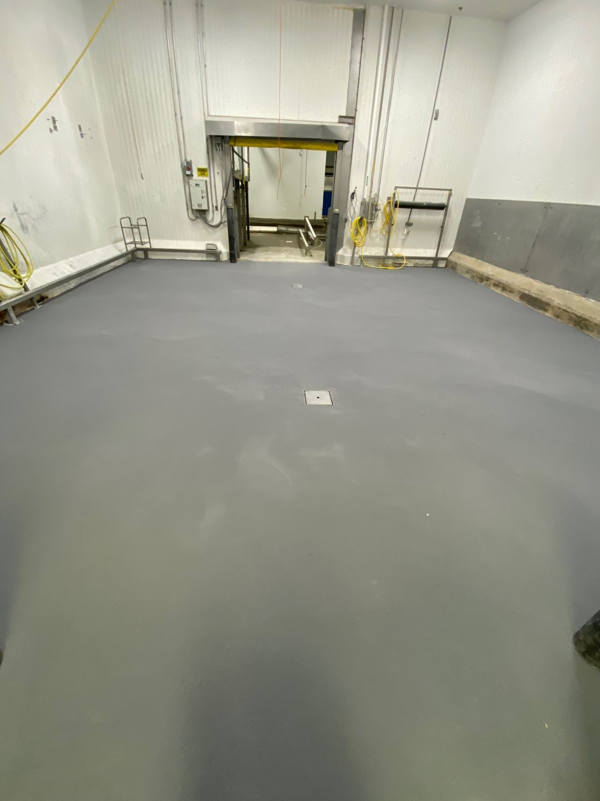
Project SpotlightBefore & After: Poultry Processing Washdown Area
Sometimes patching just isn't enough. Complete floor replacement in a poultry processing washdown area with SaniCrete STX.
View Project →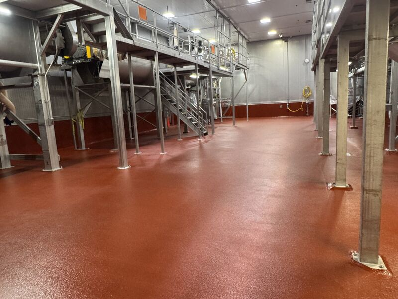
Project SpotlightFloor Restoration: SaniCrete SL with Antimicrobial Topcoat
Worn flooring restored with SaniCrete SL, VR cove base, and SaniCoat 200 epoxy with Ultra Fresh antimicrobial additive.
View Project → Project Spotlight
Project Spotlight
No Obstacle Too Challenging: STX in Low Clearance Areas
SaniCrete STX installed under heavy processing equipment in tight spaces — around the clock to meet the washdown schedule.
View Project →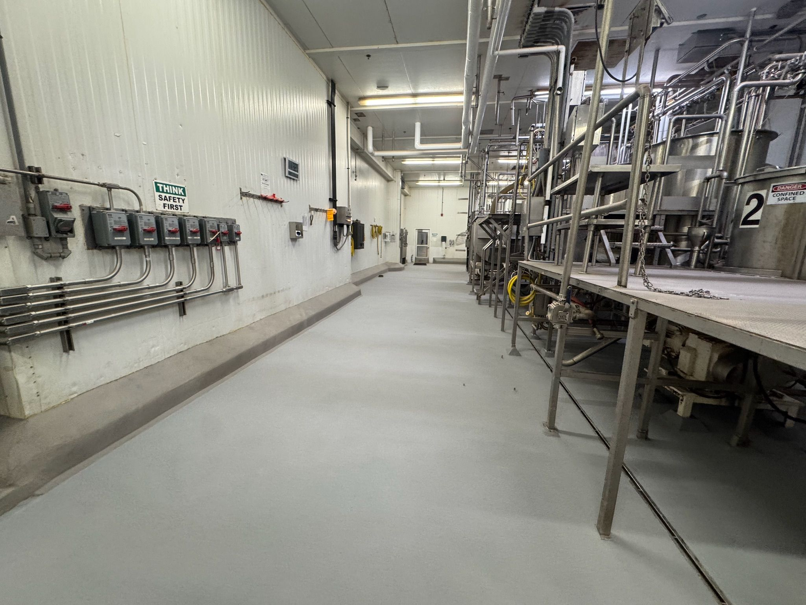
Project SpotlightFull Floor Renovation: STX & VR Curbing Throughout
From delaminated disaster to seamless, USDA-compliant surface. Jackhammered old flooring, scarified substrate, installed STX with 2" cant cove curbing.
View Project →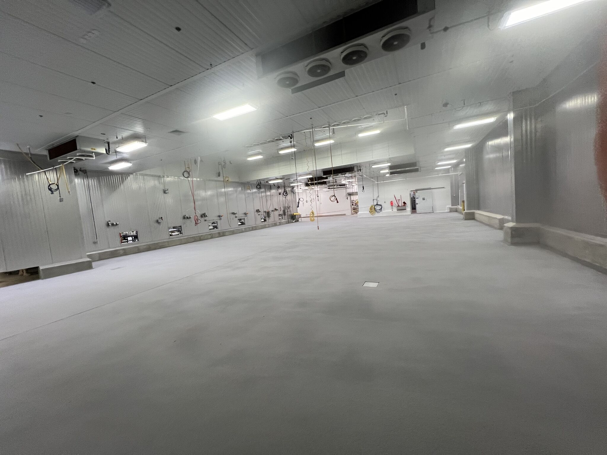
Project SpotlightThe SaniCrete Difference: Why Clients Keep Coming Back
Repeat business is the ultimate validation. Another production area transformed with STX and VR curbing for a long-standing food processing client.
View Project → Project Spotlight
Project Spotlight
1,621 SF Beef Processing Facility Floor Upgrade
From delaminated epoxy to SaniCrete SL with colored quartz broadcast for maximum slip resistance. Complete transformation with slope correction.
View Project →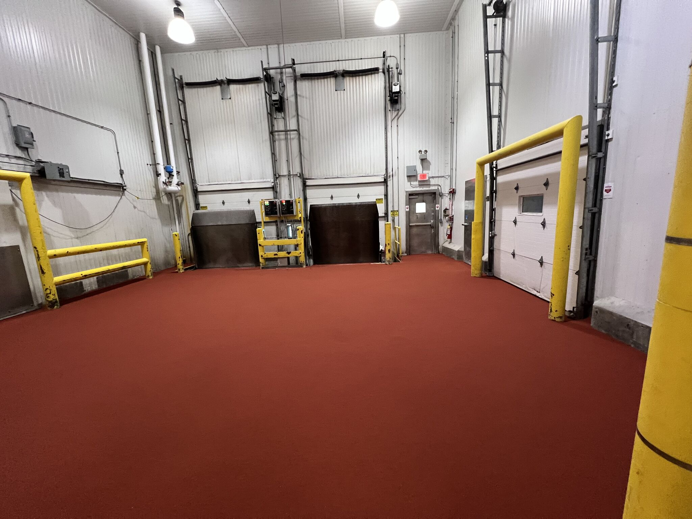
Project SpotlightLoading Dock Floor Repair: Don't Let It Be Your Weak Point
Loading docks take constant abuse from heavy traffic and daily operations. This one went from delaminated disaster to seamless, durable surface.
View Project → Project Spotlight
Project Spotlight
More Than Just Floors: Complete Facility Transformation in 7 Days
3,500 SF production room — new drains, curbing, walls, and STX flooring — all completed in a 7-day holiday shutdown.
View Project →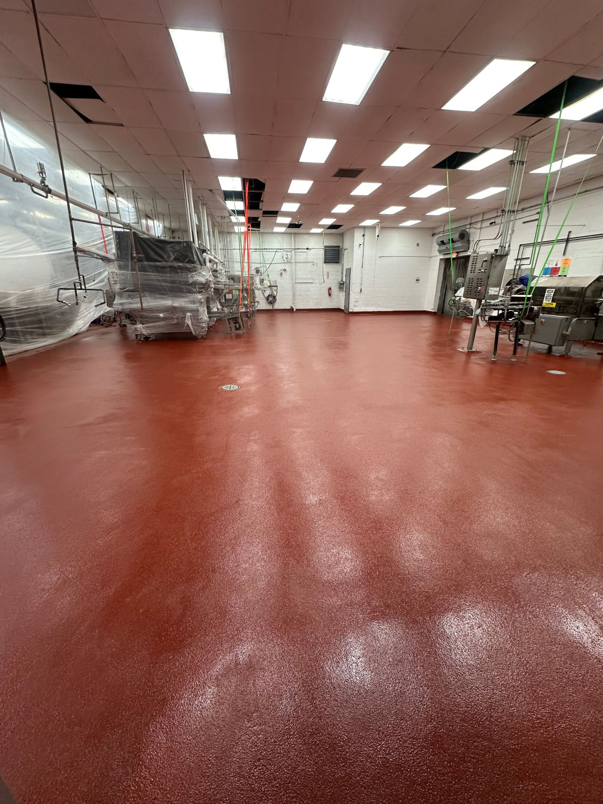
Project SpotlightFood Safety From the Ground Up: 2,652 SF Dairy Brick Replacement
Failing dairy brick replaced with SaniCrete SL, SaniBulk polymer concrete, 6" cove base, and quartz broadcast at a midwestern dairy processor.
View Project →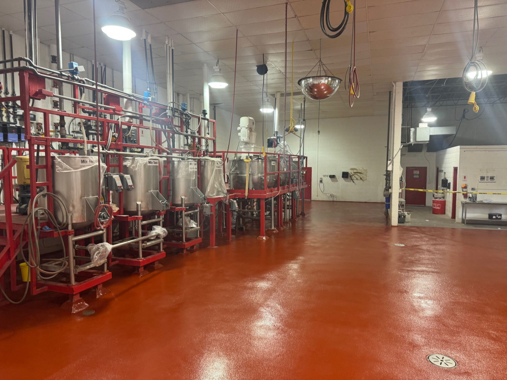
Project SpotlightFloor & Drain Replacement: 2,295 SF Production Room
Full floor removal, 4 new round top drains, STX with broadcast, VR curbing, and SaniCoat 200 sealcoat.
View Project →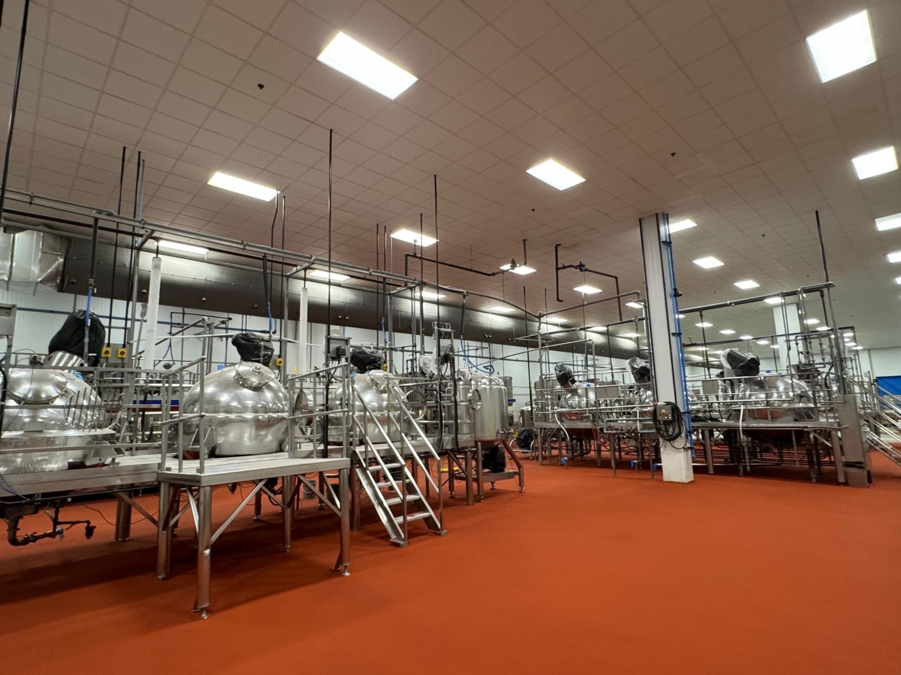
Project Spotlight5,600 SF Floor Installation in 48 Hours
Rapid turnaround without compromising quality. 5,600 square feet of production flooring installed in one weekend.
View Project →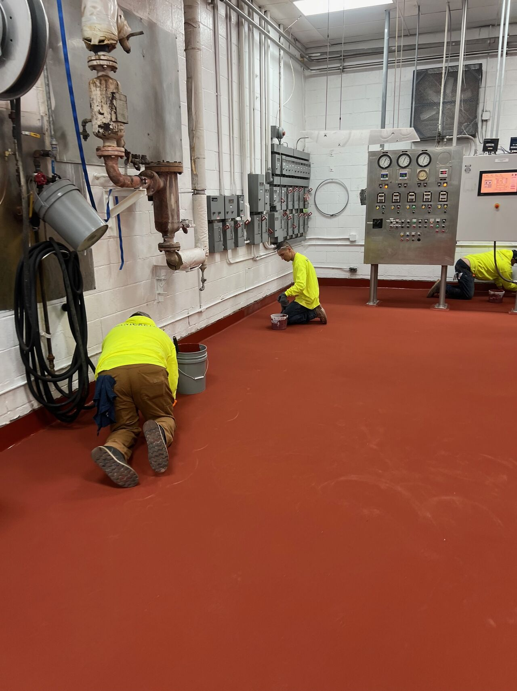
Project SpotlightMidwest Dairy Brick Renovation: 30 Yards of Demo
Massive dairy brick removal — 30-yard dumpster of demo material — followed by SaniCrete SL with sloped flooring and radius cove base.
View Project →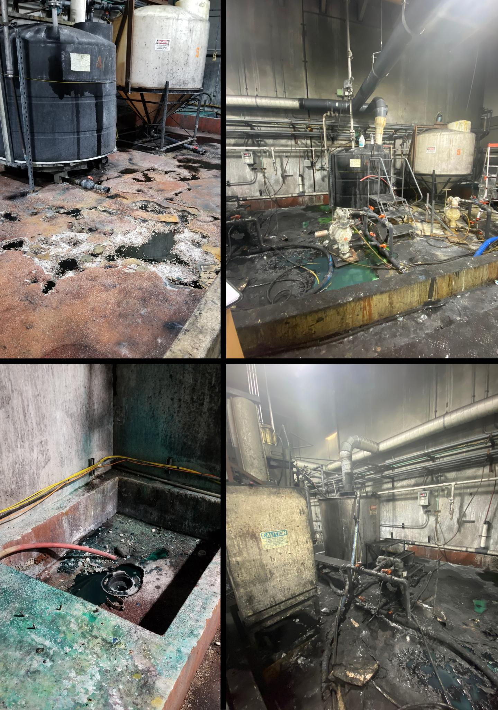
Project SpotlightSolving Severe Chemical Corrosion: SL + SaniEster
50% sulfuric acid and 67% nitric acid destroyed this floor. SaniCrete SL with SaniEster vinyl ester topcoat solved the problem.
View Project →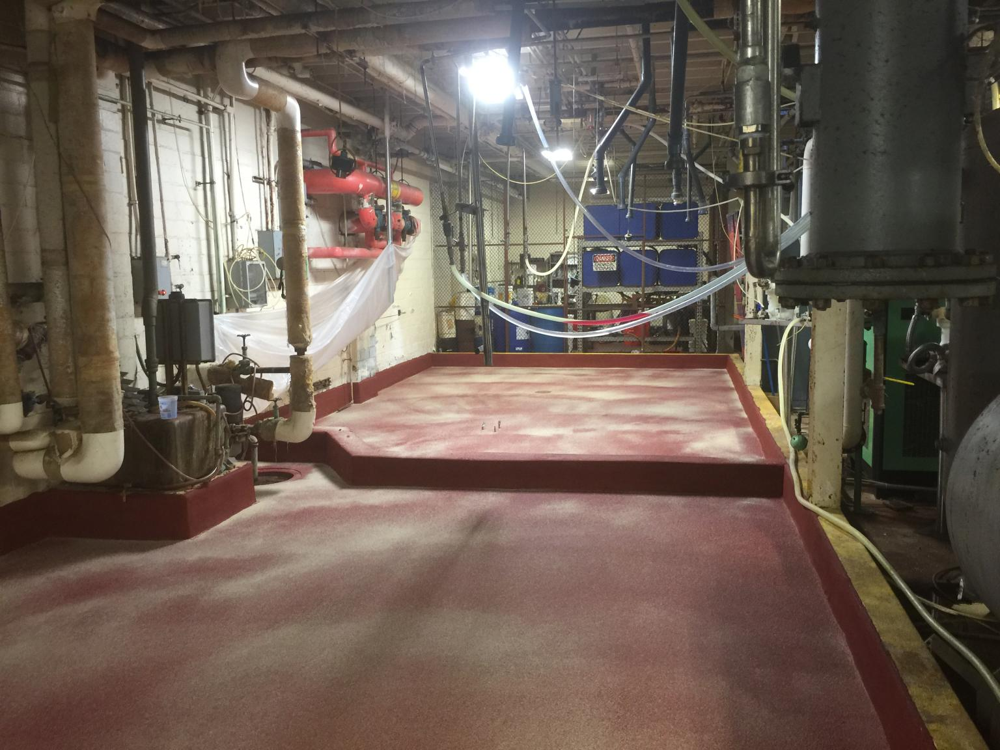
Project SpotlightEmergency Chemical Storage Floor Repair in 48 Hours
New collection sump, containment curb, and SaniCrete SL — from call to completion in two days.
View Project →